Figure 3#
Mice stay more central, move slower and orient themselves more toward the objects as they approach the screen when faced with obstructed objects.#
For reference, here is the full figure
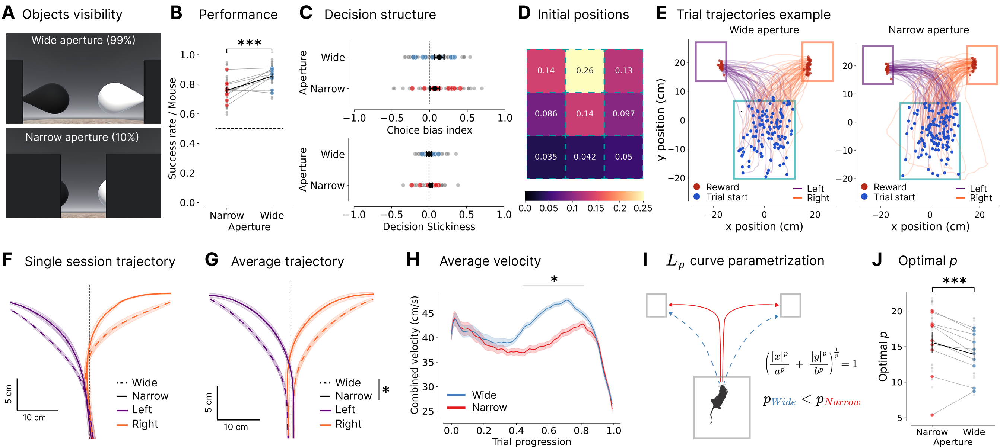
and corresponding supplemental figure
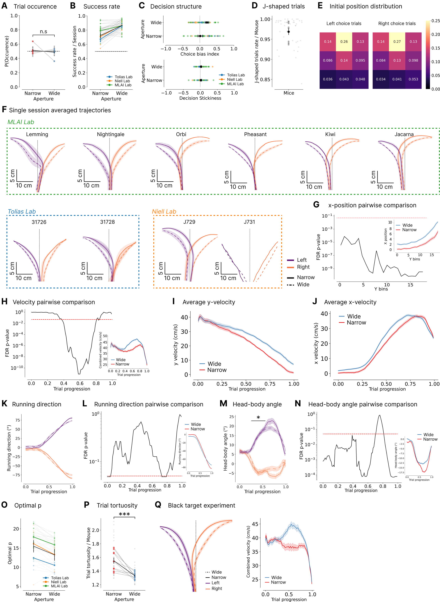
%load_ext autoreload
%autoreload 2
cd "/app/"
%run env.py
%run run.py connect
from vr4mice.schema.base_analysis import DataFrame
import pandas as pd
import matplotlib.pyplot as plt
import seaborn as sns
import numpy as np
from vr4mice.analysis import plotting
from vr4mice.schema.interpolated_trajectories import InterpolatedTrials, MeanXYTrajectory, MeanVelocities
from vr4mice.schema.session_metrics import TrialMetrics
from vr4mice.schema import base_analysis
from vr4mice.analysis.analysis import style
from vr4mice.analysis import analysis
from vr4mice.analysis import utils
from statsmodels.stats.anova import AnovaRM
from scipy.stats import ttest_rel, ttest_ind
import scipy.stats as stats
import warnings
warnings.filterwarnings("ignore")
style()
save_fig_path = "notebooks/Paper_figures/Figure_output/"
/app/.venv/lib/python3.9/site-packages/tqdm/auto.py:21: TqdmWarning: IProgress not found. Please update jupyter and ipywidgets. See https://ipywidgets.readthedocs.io/en/stable/user_install.html
from .autonotebook import tqdm as notebook_tqdm
Example trajectories (Pheasant_2024-08-15_2)#
# Load dataset and box positions
df = DataFrame().get_data(
key={"dataset": "Pheasant_2024-08-15_2"},
columns=[
"dataset",
"reward",
"x",
"y",
"trial",
"aperture",
"iti",
"trial_left_choice",
"trial_duration",
"trial_tortuosity",
"trial_init_x",
"trial_init_y",
],
)
box_df = base_analysis.BoxDataFrame().get_data(key={"dataset": "Pheasant_2024-08-15_2"})
# Tortuosity and duration
fig, ax = plt.subplots(1, 2, figsize=(15, 5))
ax = plotting.plot_tortuosity_duration_distribution(df, ax=ax, log_scale=False)
fig.tight_layout(pad=0.2)
ax[0].set_xlabel("Trial tortuosity")
ax[1].set_xlabel("Trial duration (s)")
sns.despine(offset=10)
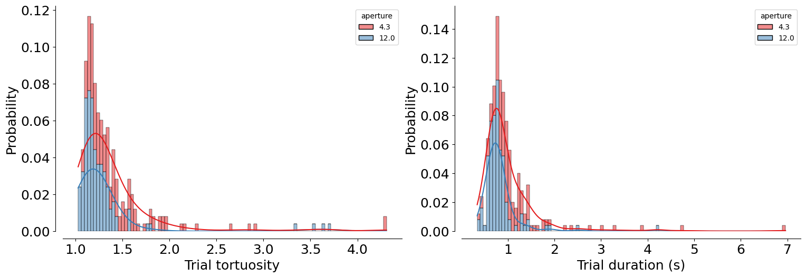
# Averaged initial starting position
fig, ax = plt.subplots(8, 6, figsize=(25, 25))
ax = ax.flatten()
df_init = df
hists = []
for i, session in enumerate(df_init.dataset.unique()):
hist = plotting.plot_init_position_histogram(
df_init[df_init.dataset == session],
box_df,
ax=ax[i],
bins=3,
cmap="magma",
vmax=40,
is_density=False,
)
number_trials = (
df_init[df_init.dataset == session].groupby(["trial"]).x.first().count()
)
hist = hist / number_trials
hists.append(hist)
ax[i].set_title(f"{session}")
# plt.close()
fig, ax = plt.subplots(1, 1, figsize=(5, 5))
sns.heatmap(
np.flip(np.mean(hists, axis=0), axis=1).T,
cmap="magma",
annot=(np.flip(np.mean(hists, axis=0), axis=1).T),
vmax=0.25,
)
ax.set_xticks([])
ax.set_yticks([])
fig.savefig(save_fig_path + "figure3_example_initial_position_heatmap.svg", dpi=300, bbox_inches="tight", transparent=True)
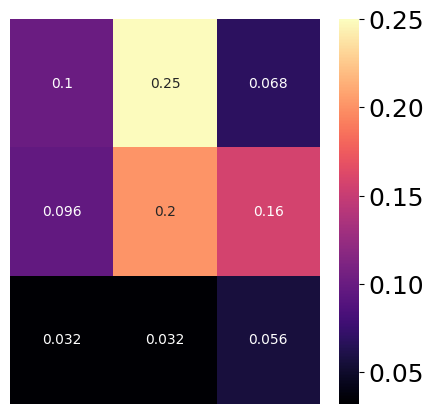
df = df[df.iti == 0.0]
j_shaped = analysis.get_jshaped_trials(df)
ax = plotting.plot_session(
df=j_shaped,
box_df=box_df,
per_aperture=True,
per_side=True,
)
ax[0].set_title("Narrow occlusion")
ax[1].set_title("Wide aperture")
sns.despine(offset=10)
plt.savefig(save_fig_path + "figure3_example_session_trajectory_plot_dual_occluder.svg", transparent=True)
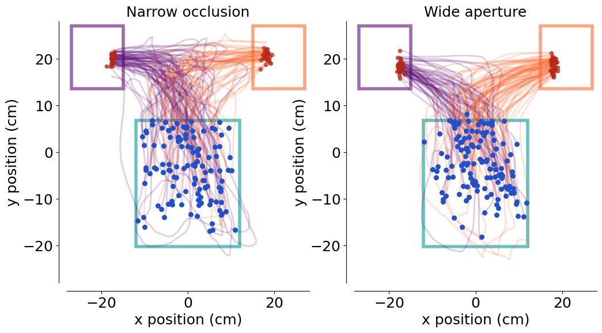
Change of mind trials#
from vr4mice.analysis.analysis import get_rewarded
j_shaped["trial_rewarded"] = get_rewarded(j_shaped)
first_y = j_shaped.groupby(["dataset", "trial"])["trial_init_y"].transform("first")
min_y = j_shaped.groupby(["dataset", "trial"])["y"].transform(lambda x: x.min())
j_shaped["is_greater"] = first_y > min_y
high_treshold = j_shaped[(j_shaped.is_greater == 0)].trial_tortuosity.quantile([0.9]).iloc[0]
low_threshold = j_shaped[(j_shaped.is_greater == 0)].trial_tortuosity.quantile([0.1]).iloc[0]
fig, ax = plt.subplots(1, 2, figsize=(8, 5))
for trial_idx in j_shaped[(j_shaped.trial_tortuosity < low_threshold) & (j_shaped.is_greater == 0)].trial.unique()[:5]:
if j_shaped[(j_shaped.trial == trial_idx)].aperture.iloc[0] == 4.3:
color = plotting.colors_aperture[0]
else:
color = plotting.colors_aperture[1]
ax[0] = plotting.plot_session(
df=j_shaped[(j_shaped.trial == trial_idx)],
box_df=box_df,
per_side=False,
ax=ax[0],
color = color
)
ax[0].set_title("Lowest tortuosity trials")
for trial_idx in j_shaped[(j_shaped.trial_tortuosity > high_treshold) & (j_shaped.is_greater == 0)].trial.unique()[:5]:
if j_shaped[(j_shaped.trial == trial_idx)].aperture.iloc[0] == 4.3:
color = plotting.colors_aperture[0]
else:
color = plotting.colors_aperture[1]
ax[1] = plotting.plot_session(
df=j_shaped[(j_shaped.trial == trial_idx)],
box_df=box_df,
ax=ax[1],
color=color
)
ax[1].set_title("Highest tortuosity trials")
ax[1].set_ylabel("")
sns.despine(offset=10)
plt.savefig(save_fig_path + "figure3_change_of_mind.svg", transparent=True)
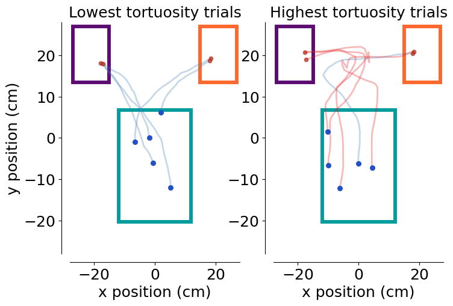
# get the percentage of narrow / wide in each group
low_tortuosity = j_shaped[(j_shaped.trial_tortuosity < low_threshold) & (j_shaped.is_greater == 0)]
high_tortuosity = j_shaped[(j_shaped.trial_tortuosity > high_treshold) & (j_shaped.is_greater == 0)]
print("Low tortuosity group:")
print(low_tortuosity.aperture.value_counts(normalize=True))
print("\nHigh tortuosity group:")
print(high_tortuosity.aperture.value_counts(normalize=True))
Low tortuosity group:
aperture
12.0 0.732125
4.3 0.267875
Name: proportion, dtype: float64
High tortuosity group:
aperture
4.3 0.870103
12.0 0.129897
Name: proportion, dtype: float64
Combined sessions analysis#
Fetching the data:
trial_df = (TrialMetrics() * vr4mice.Groups() * vr4mice.Labels() * (vr4mice.Dataset() & 'session_label = "ar_discrim_occluders"')).fetch(as_dict=True)
trial_df = pd.concat([pd.DataFrame(x) for x in trial_df])
# Exclude sessions that were not in the list
trial_df, reward_table = utils.apply_inclusion_criteria(trial_df,
return_excluded=False)
# Create list of included datasets
sessions_list = trial_df.dataset.unique()
trial_df["mouse_name"] = trial_df.dataset.str.split("_").str[0]
trial_df.mouse_name.nunique(), trial_df.dataset.nunique()
(10, 43)
trial_df.mouse_name.unique()
array(['31726', '31728', 'J729', 'J731', 'Jacana', 'Kiwi', 'Lemming',
'Nightingale', 'Oribi', 'Pheasant'], dtype=object)
trial_df.groupby("mouse_name").nunique().dataset
mouse_name
31726 4
31728 3
J729 6
J731 1
Jacana 5
Kiwi 5
Lemming 4
Nightingale 5
Oribi 5
Pheasant 5
Name: dataset, dtype: int64
df_init = pd.concat(DataFrame().get_data(
key={"dataset": mouse},
columns=[
"dataset",
"trial",
"trial_init_x",
"trial_init_y",
"trial_left_choice",
"aperture",
"y",
"x",
"trial_tortuosity", # for change of mind analysis
"iti",
],
) for mouse in sessions_list)
Initial position analysis across all sessions#
apertures = df_init.aperture.unique()
choices = sorted(df_init.trial_left_choice.unique())
hist_dict = {c: [] for c in choices}
session_hist = {c: {} for c in choices}
all_sessions_hists = []
for session in df_init.dataset.unique():
session_df = df_init[df_init.dataset == session]
# Calculate Full Histogram for this session
full_hist = plotting.plot_init_position_histogram(
session_df, box_df, ax=None, bins=3, is_density=False
)
n_total = session_df.groupby("trial").trial_init_x.first().count()
all_sessions_hists.append(full_hist / n_total)
# Calculate conditioned Histograms for this session
for ch in choices:
subset = session_df[(session_df.trial_left_choice == ch)]
if not subset.empty:
h = plotting.plot_init_position_histogram(
subset, box_df, ax=None, bins=3, is_density=False
)
n_cond = subset.groupby("trial").trial_init_x.first().count()
h_norm = h / n_cond
hist_dict[ch].append(h_norm)
session_hist[ch][session] = h_norm
fig, axes = plt.subplots(1, 3, figsize=(18, 6))
ax_full, ax_left, ax_right = axes
VMAX = 0.25
cbar_ax = fig.add_axes([0.93, 0.15, 0.015, 0.7])
full_mean = np.mean(all_sessions_hists, axis=0)
sns.heatmap(
np.flip(full_mean, axis=1).T,
cmap="magma",
annot=True,
annot_kws={"size": 20},
vmax=VMAX,
vmin=0,
ax=ax_full,
cbar=False,
)
ax_full.set_title("All trials", fontsize=16)
def _choice_label(choice_val):
if choice_val == 1:
return "Left"
if choice_val == 0:
return "Right"
return f"Choice {choice_val}"
choice_axes = {}
if 1 in choices:
choice_axes[1] = ax_left
if 0 in choices:
choice_axes[0] = ax_right
remaining = [c for c in choices if c not in choice_axes]
if remaining and ax_left not in choice_axes.values():
choice_axes[remaining.pop(0)] = ax_left
if remaining and ax_right not in choice_axes.values():
choice_axes[remaining.pop(0)] = ax_right
plot_choices = [ch for ch in [1, 0] if ch in choice_axes]
if not plot_choices:
plot_choices = list(choice_axes.keys())
for idx, ch in enumerate(plot_choices):
ax = choice_axes[ch]
if hist_dict[ch]:
cond_mean = np.mean(hist_dict[ch], axis=0)
sns.heatmap(
np.flip(cond_mean, axis=1).T,
cmap="magma",
annot=True,
annot_kws={"size": 20},
vmax=VMAX,
vmin=0,
ax=ax,
cbar=(idx == len(plot_choices) - 1),
cbar_ax=(cbar_ax if idx == len(plot_choices) - 1 else None),
)
ax.set_title(f"{_choice_label(ch)} trials", fontsize=16)
# Formatting cleanup
for ax in [ax_full, ax_left, ax_right]:
ax.set_xticks([])
ax.set_yticks([])
#plt.subplots_adjust(left=0.05, right=0.9, wspace=0.3, hspace=0.3)
fig.savefig(save_fig_path + "figure3_initial_position_heatmaps.svg", dpi=300, bbox_inches="tight", transparent=True)
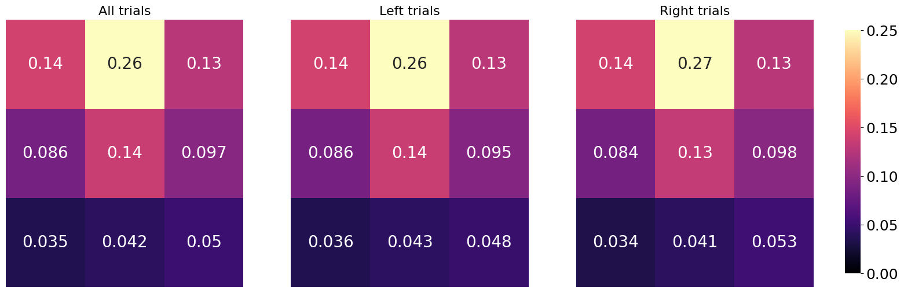
# Per-bin significance tests between choices
ch_order = sorted(choices)
sig_rows = []
def collect_choice_hist(c_val):
return session_hist[c_val]
# Between choices
if len(ch_order) >= 2:
shared_sessions = set(collect_choice_hist(ch_order[0]).keys()).intersection(
collect_choice_hist(ch_order[1]).keys()
)
if shared_sessions:
example_hist = collect_choice_hist(ch_order[0])[next(iter(shared_sessions))]
for r, c in np.ndindex(example_hist.shape):
vals_a = [collect_choice_hist(ch_order[0])[s][r, c] for s in shared_sessions]
vals_b = [collect_choice_hist(ch_order[1])[s][r, c] for s in shared_sessions]
if len(vals_a) < 2 or len(vals_b) < 2:
continue
t = ttest_rel(vals_a, vals_b)
sig_rows.append(
{
"comparison": "choice",
"level_a": ch_order[0],
"level_b": ch_order[1],
"bin_row": r,
"bin_col": c,
"p_value": t.pvalue,
"t_stat": t.statistic,
"n_sessions": len(vals_a),
}
)
sig_df = pd.DataFrame(sig_rows)
if not sig_df.empty:
sig_df["p_value_corr"] = stats.false_discovery_control(sig_df.p_value)
sig_df["significant"] = sig_df.p_value_corr < 0.05
sig_df
| comparison | level_a | level_b | bin_row | bin_col | p_value | t_stat | n_sessions | p_value_corr | significant | |
|---|---|---|---|---|---|---|---|---|---|---|
| 0 | choice | 0.0 | 1.0 | 0 | 0 | 0.654021 | -0.451403 | 43 | 0.895116 | False |
| 1 | choice | 0.0 | 1.0 | 0 | 1 | 0.727688 | -0.350537 | 43 | 0.895116 | False |
| 2 | choice | 0.0 | 1.0 | 0 | 2 | 0.961987 | -0.047945 | 43 | 0.961987 | False |
| 3 | choice | 0.0 | 1.0 | 1 | 0 | 0.729751 | -0.347768 | 43 | 0.895116 | False |
| 4 | choice | 0.0 | 1.0 | 1 | 1 | 0.690798 | -0.400527 | 43 | 0.895116 | False |
| 5 | choice | 0.0 | 1.0 | 1 | 2 | 0.365667 | 0.914515 | 43 | 0.895116 | False |
| 6 | choice | 0.0 | 1.0 | 2 | 0 | 0.383172 | 0.881299 | 43 | 0.895116 | False |
| 7 | choice | 0.0 | 1.0 | 2 | 1 | 0.676427 | 0.420275 | 43 | 0.895116 | False |
| 8 | choice | 0.0 | 1.0 | 2 | 2 | 0.795658 | -0.260621 | 43 | 0.895116 | False |
Change of mind stats#
df_init = df_init[df_init.iti==0]
first_y = df_init.groupby(["dataset", "trial"])["trial_init_y"].transform("first")
min_y = df_init.groupby(["dataset", "trial"])["y"].transform(lambda x: x.min())
df_init["is_greater"] = first_y > min_y
high_threshold = df_init[(df_init.is_greater == 0)].trial_tortuosity.quantile([0.9]).iloc[0]
low_threshold = df_init[(df_init.is_greater == 0)].trial_tortuosity.quantile([0.1]).iloc[0]
# merge low/high with trial_df
merged_df = trial_df.merge(
df_init[["dataset", "trial", "trial_tortuosity", "is_greater", "x", "y"]],
on=["dataset", "trial", "trial_tortuosity"],
how="left",
)
# get the percentage of narrow / wide in each group
low_tortuosity = merged_df[(merged_df.trial_tortuosity < low_threshold) & (merged_df.is_greater == 0)]
high_tortuosity = merged_df[(merged_df.trial_tortuosity > high_threshold) & (merged_df.is_greater == 0)]
print("Low tortuosity group:")
print(low_tortuosity.aperture.value_counts(normalize=True))
print("\nHigh tortuosity group:")
print(high_tortuosity.aperture.value_counts(normalize=True))
Low tortuosity group:
aperture
12.0 0.689217
4.3 0.310783
Name: proportion, dtype: float64
High tortuosity group:
aperture
4.3 0.836184
12.0 0.163816
Name: proportion, dtype: float64
# get the percentage of rewarded trials in each group
print("\nLow tortuosity group - Rewarded:")
print(low_tortuosity.trial_rewarded.value_counts(normalize=True))
print("\nHigh tortuosity group - Rewarded:")
print(high_tortuosity.trial_rewarded.value_counts(normalize=True))
Low tortuosity group - Rewarded:
trial_rewarded
1.0 0.81786
0.0 0.18214
Name: proportion, dtype: float64
High tortuosity group - Rewarded:
trial_rewarded
1.0 0.657925
0.0 0.342075
Name: proportion, dtype: float64
# get narrow/wide ratio only for rewarded trials
print("\nLow tortuosity group - Rewarded - Narrow/Wide Ratio:")
print(low_tortuosity[low_tortuosity.trial_rewarded == 1].aperture.value_counts(normalize=True))
print("\nHigh tortuosity group - Rewarded - Narrow/Wide Ratio:")
print(high_tortuosity[high_tortuosity.trial_rewarded == 1].aperture.value_counts(normalize=True))
Low tortuosity group - Rewarded - Narrow/Wide Ratio:
aperture
12.0 0.714392
4.3 0.285608
Name: proportion, dtype: float64
High tortuosity group - Rewarded - Narrow/Wide Ratio:
aperture
4.3 0.772459
12.0 0.227541
Name: proportion, dtype: float64
# get the backward/forward traces ratio
low_tortuosity_1 = merged_df[(merged_df.trial_tortuosity < low_threshold) & (merged_df.is_greater == 1)]
high_tortuosity_1 = merged_df[(merged_df.trial_tortuosity > high_threshold) & (merged_df.is_greater == 1)]
print("\nLow tortuosity group - Backward/Forward Ratio:")
print(low_tortuosity.shape[0] / (low_tortuosity_1.shape[0] + low_tortuosity.shape[0]))
print("\nHigh tortuosity group - Backward/Forward Ratio:")
print(high_tortuosity.shape[0], high_tortuosity_1.shape[0])
print(high_tortuosity.shape[0] / (high_tortuosity_1.shape[0] + high_tortuosity.shape[0]))
Low tortuosity group - Backward/Forward Ratio:
0.9433696379096207
High tortuosity group - Backward/Forward Ratio:
36071 179034
0.16769019781037167
Rate plots#
trial_df["lab_id"] = 0
for dataset_name in sessions_list:
# Fetch lab_id for each dataset
trial_df.loc[trial_df.dataset==dataset_name, "lab_id"] = ((vr4mice.Collab() & f'dataset = "{dataset_name}"') * vr4mice.Labs()).fetch("lab")[0]
fig, ax = plt.subplots(1, 1, figsize=(3, 5))
plotting.plot_rate(
df=trial_df,
label_x="trial_rewarded",
per_aperture=True,
ax=ax,
cmap=plotting.colors_aperture[0:2],
per_mouse=True,
)
ax.hlines(
0.5,
xmin=-0.25,
xmax=len(trial_df.aperture.unique()) - 0.75,
linestyles="dashed",
colors="k",
)
plt.ylim(0, 1.0)
plt.xlim(-0.5, 1.5)
ax.set_ylabel("Success rate / Mouse")
ax.set_xlabel("Aperture")
ax.set_xticks([0, 1], ["Narrow", "Wide"])
sns.despine(offset=10)
plt.legend([], [], frameon=False)
plt.savefig(save_fig_path + "figure3_trial_reward.svg", transparent=True)
4.3: mean=0.763 ± 0.014
12.0-4.3: TtestResult(statistic=5.6137738198471006, pvalue=1.4247895544665545e-06, df=42)
12.0: mean=0.864 ± 0.010
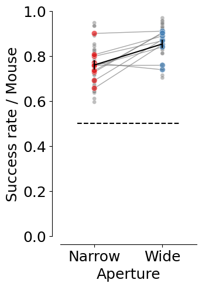
fig, ax = plt.subplots(1, 1, figsize=(3, 5))
plotting.plot_rate(
df=trial_df,
label_x="trial_rewarded",
per_aperture=True,
ax=ax,
cmap=plotting.colors_aperture[0:2],
per_lab=True,
)
ax.hlines(
0.5,
xmin=-0.25,
xmax=len(trial_df.aperture.unique()) - 0.75,
linestyles="dashed",
colors="k",
)
ax.set_ylim(0, 1.0)
ax.set_xlim(-0.5, 1.5)
ax.set_ylabel("Success rate / Session")
ax.set_xlabel("Aperture")
ax.set_xticks([0, 1], ["Narrow", "Wide"])
sns.despine(offset=10)
plt.legend([], [], frameon=False)
plt.savefig(save_fig_path + "figure3_trial_reward_per_lab.svg", transparent=True)
4.3: mean=0.763 ± 0.014
12.0-4.3: TtestResult(statistic=6.980682819350614, pvalue=1.5489501656918376e-08, df=42)
12.0: mean=0.864 ± 0.010
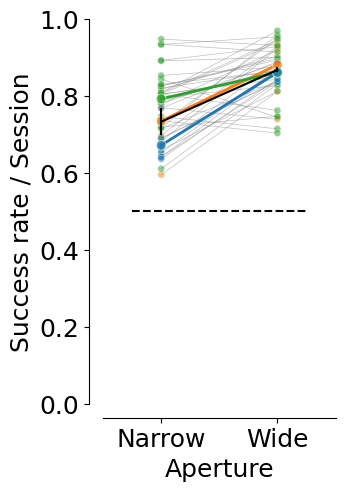
# Occurance of the different conditions
counts = (
trial_df.groupby(["dataset", "mouse_name", "aperture"])
.trial.nunique()
.reset_index(name="trial_count")
)
total_trials = (
trial_df.groupby("dataset").trial.nunique().reset_index(name="total_trials")
)
counts = counts.merge(total_trials, on="dataset")
counts["probability"] = counts["trial_count"] / counts["total_trials"]
counts.sort_values("aperture", inplace=True)
counts["aperture"] = counts.aperture.astype("str")
fig, ax = plt.subplots(1, 1, figsize=(3, 5))
sns.lineplot(
data=counts.groupby(["aperture", "mouse_name"], as_index=False).probability.mean(),
x="aperture",
y="probability",
units="mouse_name",
estimator=None,
ax=ax,
color="grey",
alpha=0.7,
linewidth=1,
zorder=3,
)
sns.scatterplot(
data=counts.groupby(["aperture", "mouse_name"], as_index=False).probability.mean(),
x="aperture",
y="probability",
hue="aperture",
ax=ax,
palette=plotting.colors_aperture,
alpha=0.6,
s=50,
zorder=2,
)
sns.scatterplot(
data=counts,
x="aperture",
y="probability",
hue="aperture",
ax=ax,
palette=["grey"] * counts["dataset"].nunique(),
alpha=0.6,
zorder=1,
s=20,
)
sns.lineplot(
data=counts.groupby(["aperture", "mouse_name"], as_index=False).probability.mean(),
x="aperture",
y="probability",
ax=ax,
color="black",
err_style="bars",
errorbar="se",
alpha=0.8,
zorder=4,
)
ax.hlines(
0.5,
xmin=-0.25,
xmax=len(trial_df.aperture.unique()) - 0.75,
linestyles="dashed",
colors="k",
)
plt.ylim(0, 1)
plt.xlim(-0.5, 1.5)
plt.xticks([0, 1], ["Narrow", "Wide"])
plt.xlabel("Aperture")
plt.ylabel("P(Occurance)")
sns.despine(offset=10)
plt.legend([], [], frameon=False)
plt.savefig(save_fig_path + "figure3_trial_number.svg", transparent=True)
counts = counts.pivot(index="dataset", columns=["aperture"], values=["probability"])
print(
"wide aperture mean: ",
np.mean(np.array(counts["probability"]["12.0"])),
"std: ",
np.std(np.array(counts["probability"]["12.0"])),
)
print(
"narrow aperture mean: ",
np.mean(np.array(counts["probability"]["4.3"])),
"std: ",
np.std(np.array(counts["probability"]["4.3"])),
)
ttest_rel(
np.array(counts["probability"]["12.0"]), np.array(counts["probability"]["4.3"])
)
wide aperture mean: 0.5029833413299016 std: 0.03979605091536686
narrow aperture mean: 0.49701665867009837 std: 0.03979605091536686
TtestResult(statistic=0.4858336726690031, pvalue=0.6296102127782549, df=42)
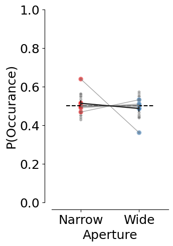
# Bias index for choice preference
fig, ax = plt.subplots(1, 1, figsize=(5, 2))
plotting.plot_rate(
df=trial_df,
label_x="trial_left_choice",
per_aperture=True,
plot_bias=True,
ax=ax,
cmap=plotting.colors_aperture[0:2],
per_mouse=True,
)
ax.set_ylim(-0.5, 1.5)
ax.set_ylabel("Aperture")
ax.set_yticks([1, 0], ["Wide", "Narrow"])
ax.set_xlim(-1, 1)
plt.legend([], [], frameon=False)
plt.xlabel("Choice bias index")
ax.axvline(x=0, color="black", linestyle="--", linewidth=1, alpha=0.5)
sns.despine(offset=10)
plt.savefig(save_fig_path + "figure3_choice_bias.svg", transparent=True)
4.3: mean=0.158 ± 0.042
12.0-4.3: TtestResult(statistic=-2.0476532990655105, pvalue=0.04688129737509803, df=42)
12.0: mean=0.052 ± 0.035
12.0 vs chance 0: t=1.07, p=0.311
4.3 vs chance 0: t=2.09, p=0.066
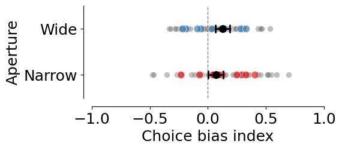
# Bias index for choice preference per lab
fig, ax = plt.subplots(1, 1, figsize=(5, 2))
plotting.plot_rate(
df=trial_df,
label_x="trial_left_choice",
per_aperture=True,
plot_bias=True,
per_lab=True,
ax=ax,
cmap=plotting.colors_aperture[0:2],
)
ax.set_ylim(-0.5, 1.5)
ax.set_ylabel("Aperture")
ax.set_yticks([1, 0], ["Wide", "Narrow"])
ax.set_xlim(-1, 1)
plt.legend([], [], frameon=False)
plt.xlabel("Choice bias index")
ax.axvline(x=0, color="black", linestyle="--", linewidth=1, alpha=0.5)
sns.despine(offset=10)
plt.savefig(save_fig_path + "figure3_choice_bias_lab.svg", transparent=True)
4.3: mean=0.158 ± 0.042
12.0-4.3: TtestResult(statistic=-1.897565129511044, pvalue=0.06464180107093387, df=42)
12.0: mean=0.052 ± 0.035
4.3 vs chance 0: t=3.74, p=0.001
12.0 vs chance 0: t=1.46, p=0.151
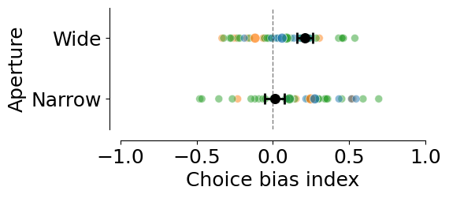
# Stickiness of the decision
trial_df["trial_history"] = trial_df.groupby(
["dataset"]
)["trial_left_choice"].transform(lambda x: x.shift(1)).fillna(0)
trial_df["decision_stickiness"] = (
(trial_df['trial_left_choice'] == trial_df['trial_history'])
.groupby([trial_df['dataset'], trial_df['trial']])
.transform('mean')
)
fig, ax = plt.subplots(1, 1, figsize=(5, 2))
plotting.plot_rate(
df=trial_df,
label_x="decision_stickiness",
per_aperture=True,
ax=ax,
cmap=plotting.colors_aperture[0:2],
per_mouse=True,
plot_bias=True,
)
ax.set_ylim(-0.5, 1.5)
ax.set_yticks([0, 1], ["Narrow", "Wide"])
ax.set_ylabel("Aperture")
ax.set_xlim(-1, 1)
plt.legend([], [], frameon=False)
plt.xlabel("Decision Stickiness")
ax.axvline(x=0, color="black", linestyle="--", linewidth=1, alpha=0.5)
sns.despine(offset=10)
plt.savefig(save_fig_path + "figure3_decision_stickiness.svg", transparent=True)
4.3: mean=0.025 ± 0.021
12.0-4.3: TtestResult(statistic=0.33738531130665483, pvalue=0.7375068324308955, df=42)
12.0: mean=0.033 ± 0.018
12.0 vs chance 0: t=1.31, p=0.224
4.3 vs chance 0: t=0.08, p=0.939
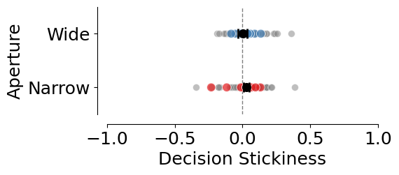
fig, ax = plt.subplots(1, 1, figsize=(5, 2))
plotting.plot_rate(
df=trial_df,
label_x="decision_stickiness",
per_aperture=True,
ax=ax,
cmap=plotting.colors_aperture[0:2],
plot_bias=True,
per_lab=True,
)
ax.set_ylim(-0.5, 1.5)
ax.set_yticks([0, 1], ["Narrow", "Wide"])
ax.set_ylabel("Aperture")
ax.set_xlim(-1, 1)
plt.legend([], [], frameon=False)
plt.xlabel("Decision Stickiness")
ax.axvline(x=0, color="black", linestyle="--", linewidth=1, alpha=0.5)
sns.despine(offset=10)
plt.savefig(save_fig_path + "figure3_decision_stickiness_per_lab.svg", transparent=True)
4.3: mean=0.025 ± 0.021
12.0-4.3: TtestResult(statistic=0.33022887730553935, pvalue=0.7428686453554969, df=42)
12.0: mean=0.033 ± 0.018
4.3 vs chance 0: t=1.20, p=0.239
12.0 vs chance 0: t=1.81, p=0.078
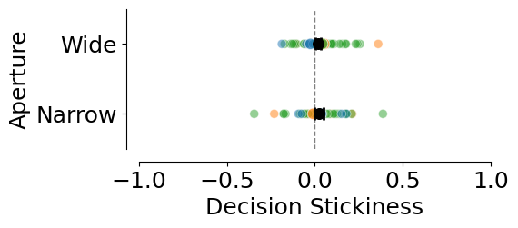
fig, ax = plt.subplots(1, 1, figsize=(3, 5))
counts = (
trial_df
.groupby(["mouse_name", "dataset", "aperture"], as_index=False)
.trial_tortuosity.mean()
)
counts["count"] = counts["trial_tortuosity"]
counts = pd.DataFrame(counts.reset_index())
counts.aperture = counts.aperture.round(2).astype(str)
print(counts.groupby(["mouse_name", "aperture"]).mean(numeric_only=True).trial_tortuosity.mean())
plotting._plot_bar_counts(
counts=counts,
label_x="aperture",
alpha=0.2,
ax=ax,
per_mouse=True,
cmap=plotting.colors_aperture[0:2],
)
ax.invert_xaxis()
ax.set_ylabel("Trial tortuosity / Mouse")
ax.set_xlim(-0.5, 1.5)
ax.set_xticks([0, 1], ["Narrow", "Wide"])
ax.set_xlabel("Aperture")
plt.legend([], [], frameon=False)
sns.despine(offset=10)
for i in counts.aperture.unique():
for j in counts.aperture.unique():
if i < j:
stat = stats.ttest_rel(
counts[counts["aperture"] == i]["trial_tortuosity"],
counts[counts["aperture"] == j]["trial_tortuosity"],
)
print(f"{i}-{j}: {stat}")
print(f"mean {i}: {np.mean(counts[counts['aperture'] == i]['trial_tortuosity'])}")
print(f"sem {i}: {stats.sem(counts[counts['aperture'] == i]['trial_tortuosity'])}")
plt.savefig(save_fig_path + "figure3_trial_tortuosity.svg", transparent=True)
1.4416126369972653
mean 4.3: 1.5571415279656475
sem 4.3: 0.03398929848536531
12.0-4.3: TtestResult(statistic=-6.84696552443165, pvalue=2.406800271755431e-08, df=42)
mean 12.0: 1.3282372799864832
sem 12.0: 0.014397048738312665
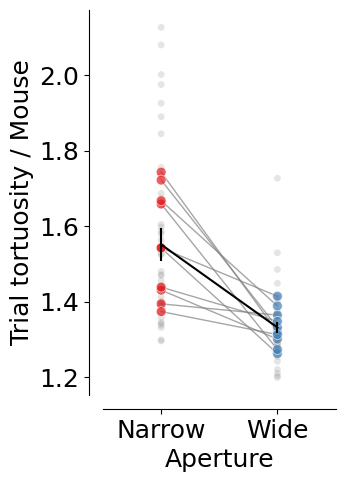
fig, ax = plt.subplots(1, 1, figsize=(2, 5))
counts = (
trial_df
.groupby(["mouse_name", "dataset"], as_index=False)
.trial_jshaped.mean()
)
counts["count"] = counts["trial_jshaped"]
counts = pd.DataFrame(counts.reset_index())
plotting._plot_bar_counts(
counts=counts,
label_x=None,
alpha=0.2,
ax=ax,
per_mouse=True,
cmap=["grey"],
)
ax.set_ylabel("J-shaped trials rate / Mouse")
ax.set_xlabel("Mice")
plt.legend([], [], frameon=False)
sns.despine(offset=10)
print(f"Overall mean: ", np.mean(counts['trial_jshaped']), stats.sem(counts['trial_jshaped']))
plt.savefig(save_fig_path + "figure3_trial_jshaped.svg", transparent=True)
Overall mean: 0.9726391912406422 0.005397079754695891
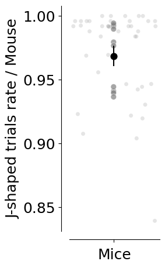
Trajectory analysis#
xy_df = []
for m in sessions_list:
xy_df.append(pd.DataFrame((MeanXYTrajectory() & f'dataset="{m}"').fetch(as_dict=True)[0]))
xy_df = pd.concat(xy_df)
xy_df["mouse_name"] = xy_df.dataset.str.split("_").str [0]
# Mean and error by mouse
mean_mouse = analysis.mean_xy_trajectory(xy_df,
index_columns=[
"mouse_name", "aperture", "trial_left_choice", "trial_length"
])
for m in mean_mouse.mouse_name.unique():
plotting.plot_mean_xy_trajectory(mean_mouse[mean_mouse.mouse_name == m],
cmap=plotting.colors_choice[::-1], color_by="choice", style_by="aperture")
plt.title(m)
plt.savefig(save_fig_path + f"figure3_dual_occluders_trajectories_time_{m}.svg", transparent=True)
plt.savefig(save_fig_path + f"figure3_dual_occluders_trajectories_time_{m}.png", transparent=True, dpi=300)
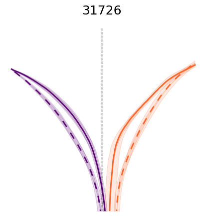
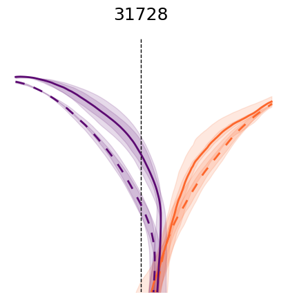
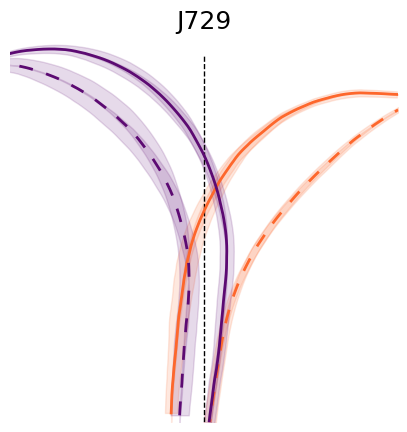
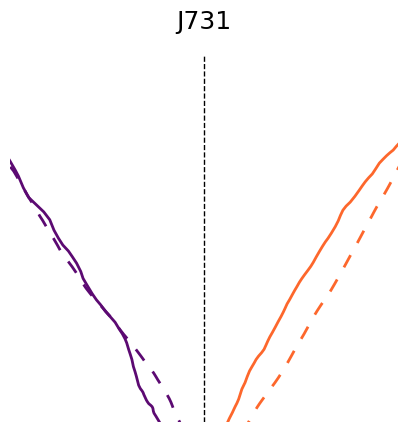
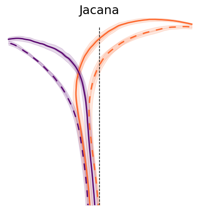
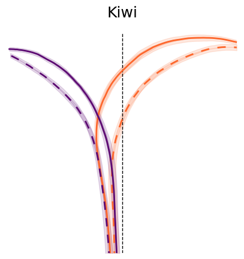
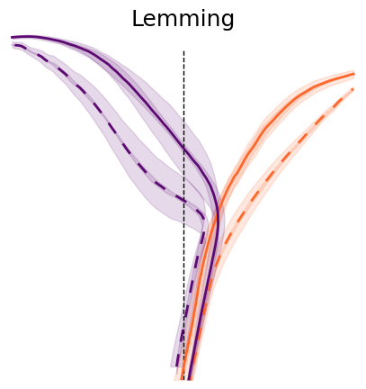
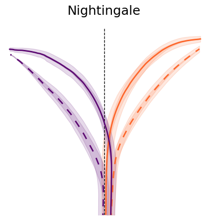
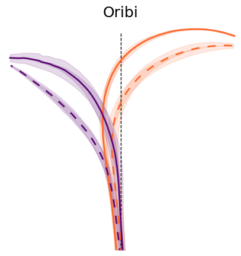
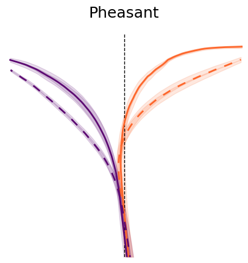
# Mean and error by aperture and choice
mean_group = analysis.mean_xy_trajectory(mean_mouse,
index_columns=[
"aperture", "trial_left_choice", "trial_length"
])
# Plot the mean trajectories from 0, 23 cm in y axis, -18, 18 cm in x axis, colored by choice and styled by aperture
plotting.plot_mean_xy_trajectory(mean_group, cmap=plotting.colors_choice[::-1], color_by="choice", style_by="aperture")
plt.savefig(save_fig_path + "figure_2_mean_xy_trajectories.svg", transparent=True)
plt.savefig(save_fig_path + "figure_2_mean_xy_trajectories.png", transparent=True, dpi=300)
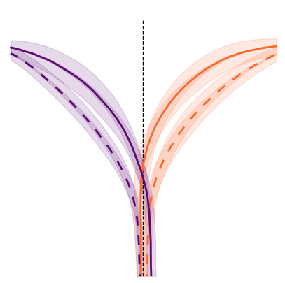
# Takes time
y_binned_df = []
for m in sessions_list:
try:
y_binned_df.append(pd.DataFrame((InterpolatedTrials() & f'dataset="{m}"').fetch("dataset", "aperture", "trial", "x", "y", "flip_one_side", "trial_left_choice", as_dict=True)[0]))
except Exception as err:
print(err)
y_binned_df = pd.concat(y_binned_df)
y_binned_df["mouse_name"] = y_binned_df.dataset.str.split("_").str [0]
y_binned_df["x_flipped"] = y_binned_df.x * y_binned_df.flip_one_side
data = utils.create_bins(y_binned_df)
y_binned_df = analysis.mean_xy_trajectory(data, index_columns= ["dataset", "mouse_name", "aperture", "bin_centers"], values=["x_flipped", "y"])
# NOTE(celia): Data unbalanced across bins, so only include bins so that balanced
stats_binned = y_binned_df[(y_binned_df.bin_centers >= 0) & (y_binned_df.bin_centers <= 18)]
sns.lineplot(data = stats_binned, x="bin_centers", y="x_flipped", hue="aperture",
palette= plotting.colors_aperture, errorbar="se")
plt.xlabel("Y bin")
plt.ylabel("X position")
sns.despine(offset=10)
plt.savefig(save_fig_path + "figure3_mean_xy_trajectory.svg", transparent=True)
print(
AnovaRM(
data=stats_binned,
depvar="x_flipped",
subject="dataset",
within=["aperture", "bin_centers"],
).fit()
)
Anova
=====================================================
F Value Num DF Den DF Pr > F
-----------------------------------------------------
aperture 81.0445 1.0000 42.0000 0.0000
bin_centers 177.8661 23.0000 966.0000 0.0000
aperture:bin_centers 14.5573 23.0000 966.0000 0.0000
=====================================================
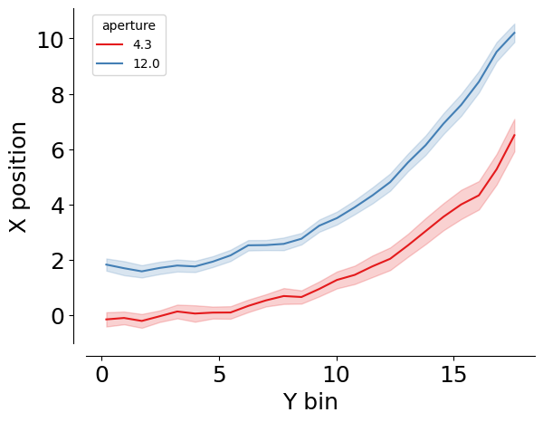
p_values = []
for i in stats_binned.bin_centers.unique():
section = stats_binned [stats_binned.bin_centers == i]
t = ttest_rel(
section[section.aperture == section.aperture.unique()[0]].x_flipped,
section[section.aperture == section.aperture.unique()[1]].x_flipped,
)
p_values.append(pd.DataFrame({"segment": i, "p_value": t.pvalue}, index=[0]))
p_value_df = pd.concat(p_values)
p_value_df["p_value_corr"] = stats.false_discovery_control(p_value_df.p_value)
sns.lineplot(data=p_value_df, x="segment", y="p_value_corr", c="black")
plt.axhline(0.05, linestyle="dashed", color="red", alpha=0.5)
plt.xlabel("Y bins")
plt.ylabel("FDR p-value")
plt.yscale("log")
sns.despine(offset=10)
plt.savefig(save_fig_path + "figure3_position_p_values.svg", transparent=True)
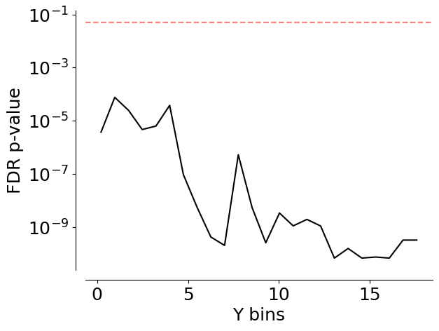
Velocity analysis#
velocity_df = []
for m in sessions_list:
print(m)
velocity_df.append(pd.DataFrame((MeanVelocities() & f'dataset="{m}"').fetch(as_dict=True)[0]))
velocity_df = pd.concat(velocity_df)
31726_2025-03-18_1
31726_2025-03-19_1
31726_2025-03-20_1
31726_2025-03-21_1
31728_2025-03-07_1
31728_2025-03-20_1
31728_2025-03-21_1
J729_2024-11-30_1
J729_2024-12-01_1
J729_2024-12-02_1
J729_2024-12-03_1
J729_2024-12-04_1
J729_2024-12-10_1
J731_2024-12-05_1
Jacana_2024-08-13_1
Jacana_2024-08-14_1
Jacana_2024-08-15_1
Jacana_2024-08-16_1
Jacana_2024-08-19_1
Kiwi_2024-08-10_2
Kiwi_2024-08-11_4
Kiwi_2024-08-12_2
Kiwi_2024-08-13_1
Kiwi_2024-08-14_1
Lemming_2024-08-10_1
Lemming_2024-08-11_1
Lemming_2024-08-12_1
Lemming_2024-08-13_1
Nightingale_2024-08-10_1
Nightingale_2024-08-11_1
Nightingale_2024-08-12_1
Nightingale_2024-08-13_1
Nightingale_2024-08-14_1
Oribi_2024-08-16_1
Oribi_2024-08-19_1
Oribi_2024-08-20_1
Oribi_2024-08-21_1
Oribi_2024-08-22_1
Pheasant_2024-08-15_2
Pheasant_2024-08-16_1
Pheasant_2024-08-19_1
Pheasant_2024-08-20_1
Pheasant_2024-08-21_1
fig, ax = plt.subplots(1, 1, figsize=(6, 5))
ax = ax
sns.lineplot(
data=velocity_df,
x="trial_length",
y="velocity",
palette=(
plotting.colors_aperture[:2]
if len(mean_mouse.aperture.unique()) == 2
else plotting.colors_aperture[:2]
),
hue="aperture",
errorbar="se",
ax=ax,
)
ax.set_title(f"Velocity")
sns.despine(offset=10)
ax.set_xlabel("Trial progression")
ax.set_ylabel("Combined velocity (cm/s)")
plt.tight_layout(pad=2)
plt.savefig(save_fig_path + "figure3_mean_velocity.svg", transparent=True)
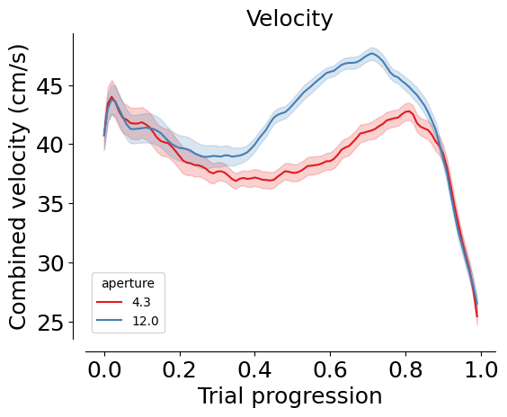
print(
AnovaRM(
data=velocity_df,
depvar="velocity",
subject="dataset",
within=["aperture", "trial_length"],
).fit()
)
Anova
======================================================
F Value Num DF Den DF Pr > F
------------------------------------------------------
aperture 58.3587 1.0000 42.0000 0.0000
trial_length 48.1771 99.0000 4158.0000 0.0000
aperture:trial_length 35.6148 99.0000 4158.0000 0.0000
======================================================
p_values = []
for i in velocity_df.trial_length.unique():
section = velocity_df[velocity_df.trial_length == i]
t = ttest_ind(
section[section.aperture == section.aperture.unique()[0]].velocity,
section[section.aperture == section.aperture.unique()[1]].velocity,
)
p_values.append(pd.DataFrame({"segment": i, "p_value": t.pvalue}, index=[0]))
p_value_df = pd.concat(p_values)
p_value_df["p_value_corr"] = stats.false_discovery_control(p_value_df.p_value)
plt.plot(p_value_df.segment, p_value_df.p_value_corr, c="k")
plt.hlines(0.05, xmin=0, xmax=1, color="red", linestyle="dashed")
plt.xlabel("Trial progression")
plt.ylabel("FDR p-value")
plt.yscale("log")
sns.despine(offset=10)
plt.savefig(save_fig_path + "figure3_velocity_pvalue.svg", transparent=True)
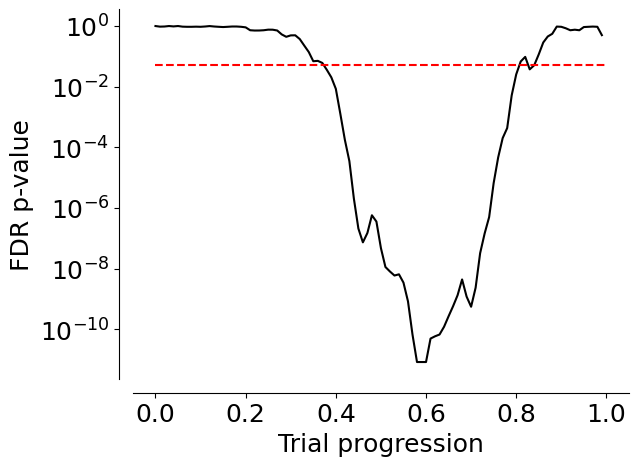
Optimal p analysis#
# TODO This fecth call is a little slow, maybe we should add an optimal p table
optimal_df = []
for m in sessions_list:
print(m)
optimal_df.append(pd.DataFrame((InterpolatedTrials() & f'dataset="{m}"').fetch("dataset", "trial", "aperture", "optimal_p", as_dict=True)[0]))
optimal_df = pd.concat(optimal_df)
optimal_df["mouse_name"] = optimal_df.dataset.str.split("_").str [0]
optimal_df = optimal_df.groupby(["dataset", "mouse_name", "trial", "aperture"], as_index=False).mean()
optimal_df = optimal_df.groupby(["dataset", "mouse_name", "aperture"], as_index=False).mean()
31726_2025-03-18_1
31726_2025-03-19_1
31726_2025-03-20_1
31726_2025-03-21_1
31728_2025-03-07_1
31728_2025-03-20_1
31728_2025-03-21_1
J729_2024-11-30_1
J729_2024-12-01_1
J729_2024-12-02_1
J729_2024-12-03_1
J729_2024-12-04_1
J729_2024-12-10_1
J731_2024-12-05_1
Jacana_2024-08-13_1
Jacana_2024-08-14_1
Jacana_2024-08-15_1
Jacana_2024-08-16_1
Jacana_2024-08-19_1
Kiwi_2024-08-10_2
Kiwi_2024-08-11_4
Kiwi_2024-08-12_2
Kiwi_2024-08-13_1
Kiwi_2024-08-14_1
Lemming_2024-08-10_1
Lemming_2024-08-11_1
Lemming_2024-08-12_1
Lemming_2024-08-13_1
Nightingale_2024-08-10_1
Nightingale_2024-08-11_1
Nightingale_2024-08-12_1
Nightingale_2024-08-13_1
Nightingale_2024-08-14_1
Oribi_2024-08-16_1
Oribi_2024-08-19_1
Oribi_2024-08-20_1
Oribi_2024-08-21_1
Oribi_2024-08-22_1
Pheasant_2024-08-15_2
Pheasant_2024-08-16_1
Pheasant_2024-08-19_1
Pheasant_2024-08-20_1
Pheasant_2024-08-21_1
optimal_df["lab_id"] = 0
for dataset_name in sessions_list:
# Fetch lab_id for each dataset
optimal_df.loc[optimal_df.dataset==dataset_name, "lab_id"] = ((vr4mice.Collab() & f'dataset = "{dataset_name}"') * vr4mice.Labs()).fetch("lab")[0]
fig, ax = plt.subplots(1, 1, figsize=(3, 5))
counts = (
optimal_df
.groupby(["mouse_name", "dataset", "aperture"], as_index=False)
.optimal_p.mean()
)
counts["count"] = counts["optimal_p"]
counts = pd.DataFrame(counts.reset_index())
counts.aperture = counts.aperture.round(2).astype(str)
plotting._plot_bar_counts(
counts=counts,
label_x="aperture",
alpha=0.2,
ax=ax,
per_mouse=True,
cmap=plotting.colors_aperture[0:2],
)
ax.invert_xaxis()
ax.set_ylabel("Optimal p")
ax.set_xlim(-0.5, 1.5)
ax.set_xticks([0, 1], ["Narrow", "Wide"])
ax.set_xlabel("Aperture")
plt.legend([], [], frameon=False)
sns.despine(offset=10)
for i in counts.aperture.unique():
for j in counts.aperture.unique():
if i < j:
stat = stats.ttest_rel(
counts[counts["aperture"] == i]["optimal_p"],
counts[counts["aperture"] == j]["optimal_p"],
)
print(f"{i}-{j}: {stat}")
print(f"mean {i}: {np.mean(counts[counts['aperture'] == i]['optimal_p'])}")
print(f"sem {i}: {stats.sem(counts[counts['aperture'] == i]['optimal_p'])}")
plt.savefig(save_fig_path + "figure3_fitted_p.svg", transparent=True)
mean 4.3: 16.68074650757546
sem 4.3: 0.5847446520330697
12.0-4.3: TtestResult(statistic=-7.120539017587505, pvalue=9.778669408258212e-09, df=42)
mean 12.0: 14.531560352042346
sem 12.0: 0.48556293421850705
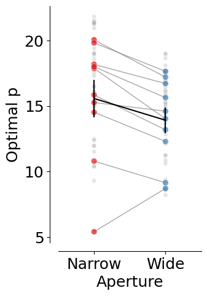
fig, ax = plt.subplots(1, 1, figsize=(3, 5))
counts = (
optimal_df
.groupby(["mouse_name", "dataset", "aperture", "lab_id"], as_index=False)
.optimal_p.mean()
)
counts["count"] = counts["optimal_p"]
counts = pd.DataFrame(counts.reset_index())
counts.aperture = counts.aperture.round(2).astype(str)
plotting._plot_bar_counts(
counts=counts,
label_x="aperture",
alpha=0.2,
ax=ax,
per_lab=True,
cmap=plotting.colors_aperture[0:2],
)
ax.invert_xaxis()
ax.set_ylabel("Optimal p")
ax.set_xlim(-0.5, 1.5)
ax.set_xticks([0, 1], ["Narrow", "Wide"])
ax.set_xlabel("Aperture")
plt.legend([], [], frameon=False)
sns.despine(offset=10)
for i in counts.aperture.unique():
for j in counts.aperture.unique():
if i < j:
stat = stats.ttest_rel(
counts[counts["aperture"] == i]["optimal_p"],
counts[counts["aperture"] == j]["optimal_p"],
)
print(f"{i}-{j}: {stat}")
plt.savefig(save_fig_path + "figure3_fitted_p_per_lab.svg", transparent=True)
12.0-4.3: TtestResult(statistic=-7.120539017587505, pvalue=9.778669408258212e-09, df=42)
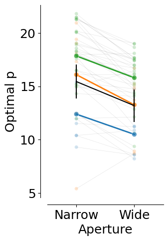
counts.groupby("aperture").optimal_p.mean(), counts.groupby("aperture").optimal_p.sem()
(aperture
12.0 14.531560
4.3 16.680747
Name: optimal_p, dtype: float64,
aperture
12.0 0.485563
4.3 0.584745
Name: optimal_p, dtype: float64)